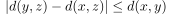
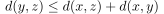
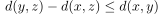
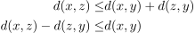
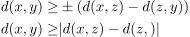
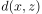
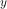
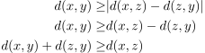

umgekehrte Dreiecksungleichung
1. Definition / Satz
Sei  ein metrischer Raum und
ein metrischer Raum und  .
Dann ist die umgekehrte Dreiecksungleichung:
.
Dann ist die umgekehrte Dreiecksungleichung:

1
äquivalent zur Dreiecksungleichung
2. Beweis
2.1. a)
Es gilt nach der Dreiecksungleichung:

2
und damit auch

3
Analog gilt

4
Damit folgt:

5
2.2. b)
Sei  gegeben und  beliebig, so gilt:

6